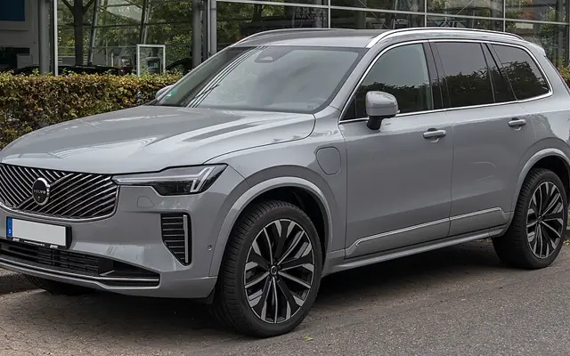

Par Motor › Precios por modelo › Volvo XC90
Precio de segunda mano · noviembre de 2026¿Cuánto vale un Volvo XC90 de segunda mano?

Precio justo estimado de un Volvo XC90 usado en España, año por año, con los kilómetros normales para su edad y en buen estado: de 7.400 € a 80.400 €. Para tasar el tuyo con sus kilómetros reales y su estado, usa el tasador gratis.
Precios del Volvo XC90 por año
XC90 I (2002–2014)
Precio de nuevo: 2.5 T 210 CV, 48.000 € · D5 2.4 163 CV, 48.000 € · 3.2 243 CV, 52.000 €
| Año | Km normales | 2.5 T 210 CV · Gasolina | D5 2.4 163 CV · Diésel | 3.2 243 CV · Gasolina |
|---|---|---|---|---|
| 2014 | 100.000 km | 19.500 € | 19.100 € | 21.100 € |
| 2013 | 100.000 km | 18.200 € | 17.700 € | 19.700 € |
| 2012 | 100.000 km | 16.800 € | 16.300 € | 18.200 € |
| 2011 | 100.000 km | 15.500 € | 15.100 € | 16.800 € |
| 2010 | 100.000 km | 14.400 € | 13.900 € | 15.600 € |
| 2009 | 100.000 km | 13.300 € | 12.900 € | 14.400 € |
| 2008 | 100.000 km | 12.300 € | 11.900 € | 13.300 € |
| 2007 | 100.000 km | 11.300 € | 11.000 € | 12.300 € |
| 2006 | 100.000 km | 10.500 € | 10.100 € | 11.300 € |
| 2005 | 100.000 km | 9.700 € | 9.400 € | 10.500 € |
| 2004 | 100.000 km | 8.900 € | 8.700 € | 9.700 € |
| 2003 | 100.000 km | 8.300 € | 8.000 € | 8.900 € |
| 2002 | 100.000 km | 7.600 € | 7.400 € | 8.300 € |
XC90 II (2015–hoy)
Precio de nuevo: T5 2.0 250 CV, 65.000 € · D4 2.0 190 CV, 63.000 € · T8 Recharge (enchufable) 455 CV, 88.000 €
| Año | Km normales | T5 2.0 250 CV · Gasolina | D4 2.0 190 CV · Diésel | T8 Recharge (enchufable) 455 CV · Híbrido enchufable |
|---|---|---|---|---|
| 2026 | 5.000 km | 66.000 € | 61.400 € | 80.400 € |
| 2025 | 20.000 km | 55.400 € | 51.600 € | 67.500 € |
| 2024 | 35.000 km | 51.200 € | 47.700 € | 62.400 € |
| 2023 | 50.000 km | 47.300 € | 44.100 € | 57.700 € |
| 2022 | 65.000 km | 43.700 € | 37.400 € | 53.300 € |
| 2021 | 80.000 km | 38.800 € | 34.200 € | 47.300 € |
| 2020 | 95.000 km | 33.600 € | 33.700 € | 40.900 € |
| 2019 | 100.000 km | 31.400 € | 33.100 € | 38.300 € |
| 2018 | 100.000 km | 30.400 € | 32.400 € | 37.100 € |
| 2017 | 100.000 km | 29.500 € | 31.600 € | 35.900 € |
| 2016 | 100.000 km | 28.400 € | 29.400 € | 34.600 € |
| 2015 | 100.000 km | 27.400 € | 27.100 € | 33.400 € |
Kilómetros normales: 15.000 al año en gasolina, híbridos y eléctricos, y 20.000 en diésel, con un máximo de 100.000 km (por encima no tasamos: el precio depende demasiado del historial de cada coche). Cifras redondeadas a 100 €.
Preguntas frecuentes
¿Cuánto vale un Volvo XC90 de segunda mano?
Según el año, la versión y los kilómetros, un Volvo XC90 usado vale hoy de 7.400 € a 80.400 € en España. El más barato de nuestra tabla es un D5 2.4 de 2002 (7.400 €) y el más caro un T8 Recharge (enchufable) de 2026 (80.400 €). Son precios justos estimados entre particulares y profesionales, con los kilómetros normales para su edad y en buen estado.
¿Cuánto valor pierde un Volvo XC90 al año?
Con unos años encima, un Volvo XC90 pierde alrededor de un 8 % de su valor cada año (calculado sobre el T5 2.0 de la generación XC90 II). Los primeros años la caída es mayor y a partir de los 70.000 km se acelera.
¿Qué motorizaciones tiene el Volvo XC90?
En nuestra base de datos hay versiones gasolina, diésel y híbrido enchufable, en 2 generaciónes: XC90 I y XC90 II.
¿Cómo sé si me piden demasiado por un Volvo XC90?
Abre el tasador de Par Motor, elige el Volvo XC90, el año y los kilómetros reales, y escribe lo que te piden. Te diremos si está por debajo del precio justo (chollo) o por encima (caro). Es gratis y no pide registro ni matrícula.
Otros Volvo
Compara su coste real
El precio de compra es solo una parte. Mira cuánto te costaría al mes con combustible, seguro, neumáticos, mantenimiento y lo que pierde de valor.
Abrir el comparador →